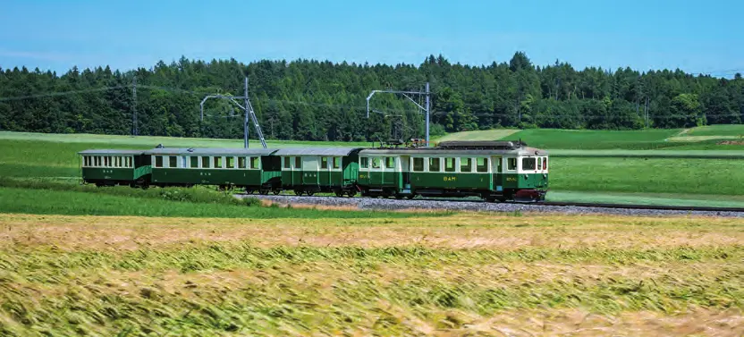
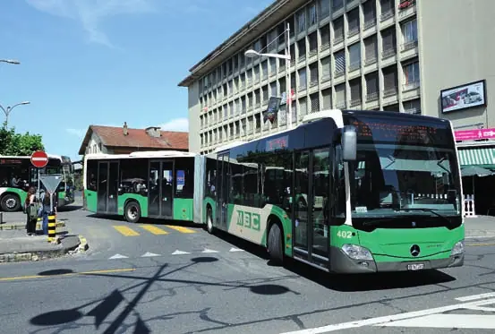
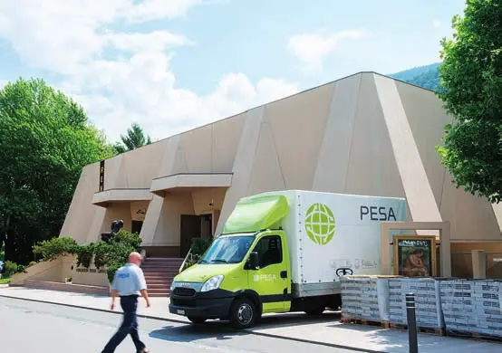
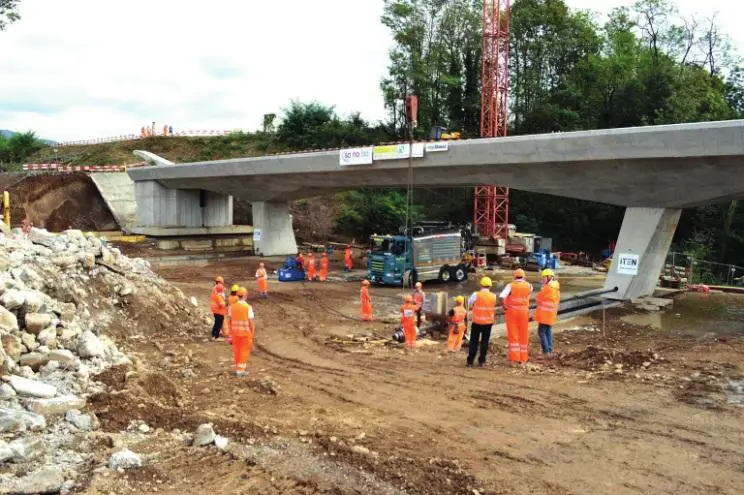
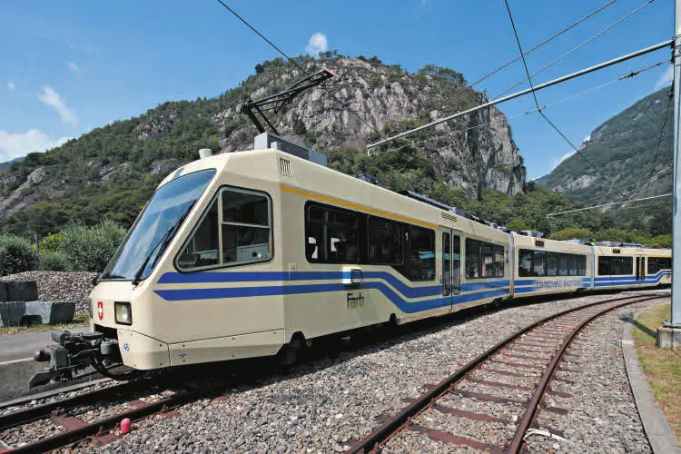
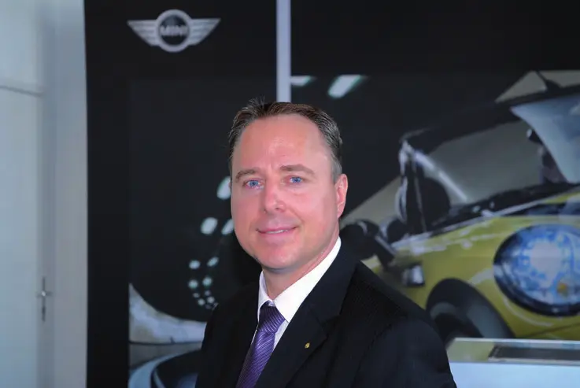
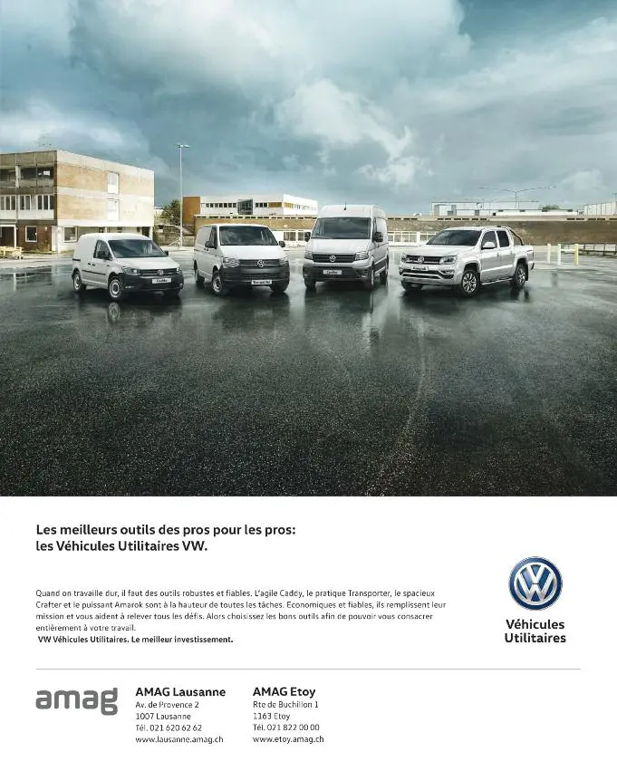

Grands travaux · 2026

102 entreprises · 124 articles · 11 magazines
Les chantiers présentés par l’OFROU
Interview mit Linus Looser, Mitglied der Konzernleitung und Leiter SBB Infrastruktur
Reportage photo bilingue
 Interview
InterviewInterview mit Urs Friess, Managing Director (aussi en français et en italien)
Produits biosourcés, procédés décarbonés et circuits courts
Fibre optique pour les autoroutes romandes
Nouvelle organisation et « radiologie de la route »
L’environnement dans les projets ferroviaires
A Grono, la tradizione incontra l’innovazione (italien, français, allemand)
Ein Service von hoher Qualität
Signalisation routière statique et dynamique
Gestion dynamique du trafic autoroutier depuis 1974
SMARTROAD, Inno-Display et TechCity
Trois générations d’ingénierie civile à Lugano
Interview de Gérald Cretegny, président de la Région de Nyon, syndic de Gland
Interview de Pierre Graber, responsable de la mobilité au sein du comité de direction, syndic de Saint-Cergue
Interview de Vincent Jaques, syndic de la ville
Interview de Georges Rime, syndic
 Publireportage
Publireportage Publireportage
Publireportage
Publireportage Publireportage
PublireportagePublireportage
Entretien avec Pierre-Yves Gruaz, directeur général de la mobilité et des routes
 Publireportage
PublireportageCompany profile
 Publireportage
PublireportageCompany profile
Company profile
Company profile
Interview mit Stefan Studer, Kantonsoberingenieur / Amtsvorsteher
Interview de Laurent Favre, conseiller d’État neuchâtelois
 Interview
InterviewEntretien avec Nicolas Merlotti
 Publireportage
PublireportageCompany profile
Entretien avec Mme Florence Germond, municipale en charge des Finances et de la Mobilité
 Publireportage
PublireportageInterview mit Alexander Streitzig, Vorsitzender der Geschäftsleitung
BG Consulting Engineers – Building a sustainable living environment
Entretien avec M. Michel Joye, directeur des tl

PublireportagePublireportage

PublireportageDes vœux dans le monde entier / Shipping throughout the world (français et anglais)
 Interview
InterviewEntretien avec Richard Zaugg, directeur (français et allemand)
InterviewEin hochwertiges und flexibles Angebot (français et allemand)
L’association faîtière des constructeurs d’infrastructures
Interview mit Dr. Dieter Wepf, Präsident
La faîtière de l’économie suisse de la construction
Le plus ancien bureau suisse spécialisé en mobilité
 Dossier
DossierTravaux routiers et autoroutiers
DossierTravaux de réfection entre Vétroz et Uvrier
DossierRemise en état progressive de la route du col
DossierAssainissement de l’autoroute à travers l’agglomération de Neuchâtel

DossierAutomatisation de la ligne Bellinzone–Luino
 Dossier
DossierDeux minutes d’intervalle entre Wankdorf et Berne
Nouvelle liaison ferroviaire transfrontalière
DossierProgramme ZEB entre Berne et Thoune
 Dossier
DossierModernisation de la gare de Martigny
DossierVers la cadence au quart d’heure entre Coppet et Genève
Une troisième voie sur l’axe du Saint-Gothard
 Interview
InterviewInterview mit Werner Kradolfer und Alex Veigl / Entretien avec Werner Kradolfer et Alex Veigl
 Interview
InterviewEntretien avec M. Richard Zaugg, directeur des TPN
 Interview
InterviewEntretien avec M. Pascal Vuilleumier, directeur de transN
 Publireportage
PublireportageNeue Herausforderungen professionell angehen
 Publireportage
PublireportageSeit 65 Jahren auf sicheren Gleisen
 Publireportage
PublireportageIngénierie des structures, des infrastructures et planification générale
PublireportageDas Rückgrat der Region
 Publireportage
PublireportageStatique, hydraulique, acoustique et trafic
Robert-Grandpierre & Rapp SA
 Publireportage
PublireportageLe funiculaire Piazza Cioccaro – gare CFF de Lugano
Technique de la circulation
 Interview
InterviewEntretien avec M. Jean Bourgknecht, conseiller communal en charge de l'urbanisme et du génie civil
InterviewEntretien avec M. Thierry Steiert, conseiller communal en charge de la Police locale, de la Mobilité, des Sports et des Services industriels
 Interview
InterviewInterview de Corinne Margalhan-Ferrat, directrice de l'Agglomération de Fribourg
 Publireportage
PublireportageEntretien avec Pierre-André Arm, directeur de la Communauté régionale de la Broye
 Publireportage
PublireportageVéhicules utilitaires et systèmes de pesage (version allemande incluse)
 Publireportage
PublireportageComposants de carrosserie à Payerne
 Publireportage
PublireportageInterview de Vincent Ducrot, directeur général (version allemande incluse)
Interview de François Kuonen, directeur du département de l'urbanisme de la Ville de Bienne
 Publireportage
PublireportageInterview mit Rolf Meyer, Leiter Unternehmenskommunikation (version anglaise incluse)
 Interview
InterviewInterview de M. François Lance, conseiller administratif de la Ville de Lancy
 Publireportage
PublireportageEntretien avec M. Daniel Rossellat, syndic
Interview de Gérald Cretegny, président du comité de direction de Régionyon
 Interview
InterviewInterview de Jean-Christophe de Mestral, municipal (finances, mobilité, transports publics, sécurité)
 Interview
InterviewInterview d'Yves Paccaud, municipal en charge de l'aménagement du territoire et du développement durable
 Interview
InterviewInterview de Michael Rohrer, municipal (sécurité publique, population, transports publics)
Entretien avec Mme Elisabeth Ruey-Ray, conseillère municipale en charge de la mobilité, des transports et de la sécurité publique
 Publireportage
PublireportagePublireportage bilingue
 Interview
InterviewLe responsable du développement urbain
Interview de Georges Joliat, chef du service des travaux publics de la Ville de Sion
Interview de Cyrille Fauchère, président de la commission de l'aéroport international de Sion
 Publireportage
PublireportageTMR, le transporteur régional incontournable
Interview de Pierre Kenzelmann, conseiller municipal de Sierre en charge des travaux publics
Interview de Jean-Paul Salamin, conseiller municipal de Sierre en charge de l'aménagement du territoire
 Publireportage
PublireportageUne entreprise familiale sierroise depuis 1912
 Interview
InterviewLa conseillère communale de Neuchâtel
Pascal Sandoz, conseiller communal de Neuchâtel
 Publireportage
PublireportageLe transporteur public du canton de Neuchâtel
 Interview
InterviewInterview de Madame Mireille Gasser, secrétaire générale d'arcjurassien.ch
 Interview
InterviewInterview de Monsieur Pascal Broulis, président volontariste d'arcjurassien.ch
 Interview
InterviewInterview de Monsieur Erich Fehr, maire de la ville de Bienne
Interview mit Alexander Tschäppät, Stadtpräsident von Bern / « La politique est l'art de réunir les bonnes conditions au moment idoine »
 Interview
InterviewInterview mit Hans-Peter Wyss, Stadtingenieur Bern / Office des ponts et chaussées de la ville de Berne – « Nous gérons l'espace public »
 Publireportage
PublireportageEntretien avec M. Urs Kamber, directeur général
 Publireportage
PublireportageInterview mit Martin Jaeggi, Unternehmensleiter / Annax Suisse S.A. – Entretien avec Martin Jaeggi, directeur de l'entreprise
Interview mit Kurt E. Wagner, VR-Delegierter und CEO, und Mirko Feller, Stv. CEO / Solutions globales dans les domaines de la construction, de l'environnement, de la mobilité et de l'énergie
 Publireportage
PublireportageEin umfangreicher Mehrspindelmaschinenpark
Geschäftsleitung: R. Brinkmann, Dr. Ch. Meyer / Geotest SA – Géologie, géotechnique, géophysique, environnement
Interview mit Regierungsrat Ernst Stocker
Interview mit Beat Zimmermann, Stv. Direktor ZHK
 Interview
InterviewInterview mit Katrin Schubiger, Georg Rinderknecht und Jürg Senn
 Interview
InterviewInterview mit Martin Bachmann, Executive Vice President der Pöyry PLC und Verwaltungsratspräsident der Pöyry Schweiz AG
 Publireportage
PublireportageBureau d'ingénieurs à Locarno
 Publireportage
PublireportageTransports, logistique et douane à Chiasso
 Publireportage
PublireportageCompagnie aérienne régionale basée à Lugano
Giorgio Marcionni, direttore

PublireportageMauro Caronno, direttore (version anglaise incluse)
Precision mechanics, even on the Moon – Silvano Casini, direttore
 Publireportage
PublireportageGiorgio Mischler, direttore (version anglaise incluse)
 Publireportage
PublireportageFranco Greco, direttore (version anglaise incluse)
 Interview
InterviewLes HUG en pionniers européens (version anglaise : The model of a "green hospital")
 Publireportage
PublireportageEntretien avec M. Denis Picard, directeur

PublireportageEntretien avec M. Alexandre Farago, directeur
Urgence, transport préhospitalier et rapatriement

Décolletage de haute précision
Ingénierie et conseil
Collectivité régionale (aménagement et mobilité)
Distribution de carburants et combustibles

Bureau d’ingénieurs civils

Automobiles
Bureau d'ingénieurs
Systèmes d'information voyageurs pour le ferroviaire
Association intercantonale de développement régional
Service d'ambulances et de transport de patients
Bureau d'architecture et d'urbanisme
Organisation faîtière de la construction
Logiciels de gestion du trafic et des infrastructures
Transports publics urbains
Ingénierie et conseil
Administration cantonale – relations extérieures
Chemins de fer – programme Léman 2030
Chemins de fer – projets d’infrastructure
Transports, logistique et douane
Garage et concession automobile
Construction et entretien routiers

Commune
Développement régional intercantonal
Logistique de santé
Réseaux de fibre optique pour infrastructures routières
Automobiles
Compagnie aérienne régionale
Administration cantonale – territoire, mobilité et énergie
Logistique et entreposage sous douane
Diagnostic numérique des réseaux routiers
Administration cantonale – mobilité et routes
Bureau d’ingénieurs en électricité

Bureau d’études en environnement
Ingénierie, planification et conseil (infrastructures)
Ingénierie, planification et management de projets
Garage et concession automobile
Ingénierie routière et essais de matériaux
Décolletage de précision sur multibroches
Transports publics (train, bus, téléphériques)
Chemins de fer – projets d’infrastructure
Chemin de fer régional
Construction, entretien et logistique ferroviaires
Génie civil spécialisé – précontrainte et réparation d’ouvrages
Véhicules utilitaires et systèmes de pesage
Géologie, géotechnique, géophysique et environnement
Hôpital universitaire
Association faîtière des constructeurs d’infrastructures
Géologie appliquée et géotechnique
Signalisation, marquage et service hivernal
Infrastructures ferroviaires, routières et énergétiques

Ingénieurs civils et planificateurs
Ingénierie civile et planification générale
Mécanique de précision aéronautique et spatiale
Transport ferroviaire
Administration fédérale – routes nationales
Construction métallique
Transport, entreposage et dédouanement
Ingénierie et conseil

Bitumes et entretien des revêtements routiers
Composants pour véhicules utilitaires
Association intercommunale de développement régional
Association de développement régional
Transport, matériaux de construction et services aux collectivités
Ingénierie de la gestion du trafic et de la mobilité
Production de béton prêt à l'emploi
Ingénierie civile et entreprise de construction
Chemins de fer – projets d’infrastructure
Construction métallique et tôlerie
Chemins de fer fédéraux – infrastructure ferroviaire
Administration cantonale – patrimoine immobilier
Signalisation routière statique et dynamique
Signalisation dynamique et smart city

Administration communale
Administration communale
Développement urbain
Bureau d’ingénierie civile
Bureau d’ingénierie (statique, hydraulique, acoustique, trafic)
Administration communale – génie civil et espace public
Administration cantonale – ponts et chaussées
Transports publics
Transports publics ferroviaires et routiers
Transports publics urbains
Transports publics (bus)
Bureau d’études en mobilité et transports
Transports publics (bus, trains, funiculaires)
Transports publics
Transports publics
Transports publics
Transports, terrassement et services
Commune
Administration communale
Commune
Commune
Commune
Commune

Administration communale
Commune
Administration communale
Administration communale
Administration cantonale
Association professionnelle et normalisation routière
Chambre de commerce
Aucun résultat.
Grands travaux · 2026


Collectivités · 2018


Économie régionale · 2015


Collectivités · 2014


Économie régionale · 2012